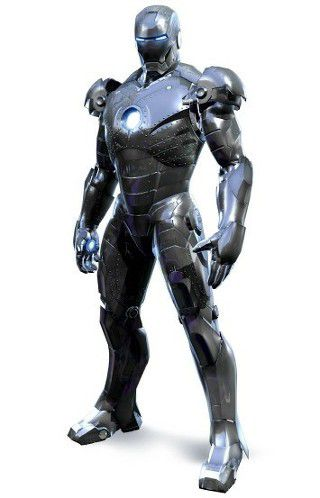
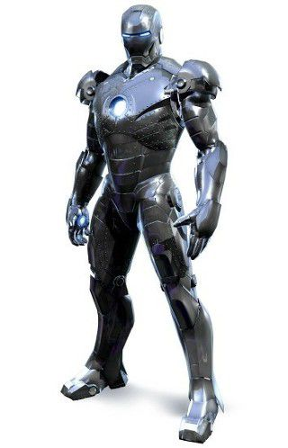

|  | 상품가격 | 9,990,000,000원 |
|---|---|---|
| 원산지 | 국내 | |
| Mk.2 아머 | 배송 | 무료 평균배송일 5.0일 |
| 후기 |  | |
토니가 1편의 사건 이후 말리부 저택으로 돌아와 본격적으로 만든 수트
인공지능 자비스가 토니를 보조하게 되어 Mk.1에 비해 정확도도 대폭 늘었고 각종 전자적 보조를 받을 수 있게 되었다.
강철합금으로 만들어져서 고도비행시 수트가 얼어버리는 단점이 있다.
아이언맨2에서 제임스 로드가 탈취해 간것도 이 수트.
|  | 상품가격 | 9,990,000,000원 |
|---|---|---|
| 원산지 | 국내 | |
| Mk.2 아머 | 배송 | 무료 평균배송일 5.0일 |
| 후기 | | |